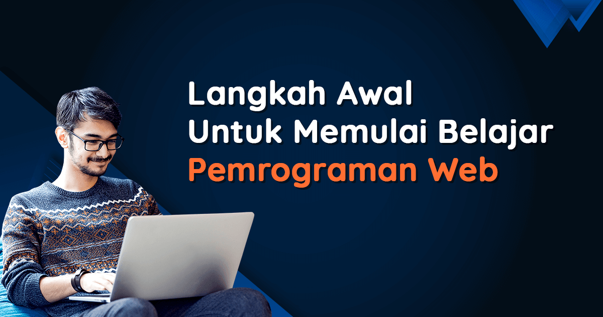
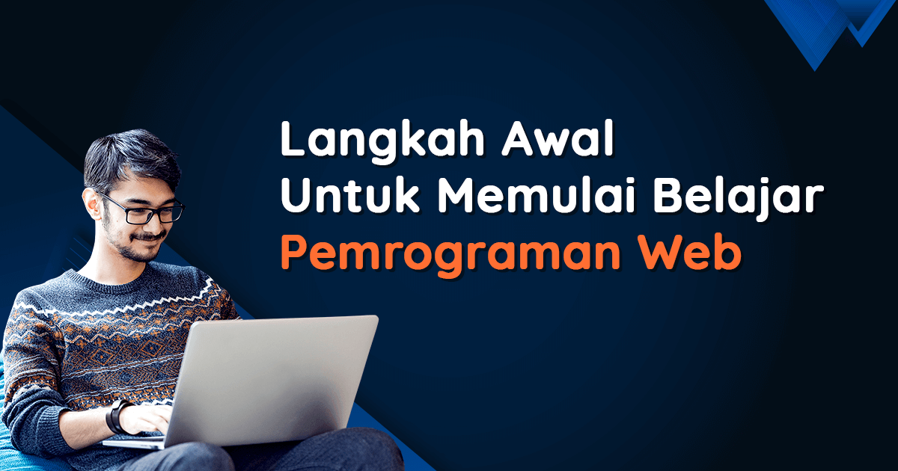

Portfolio
Front end web development bukan hanya tentang membuat halaman web tampak bagus, tetapi juga tentang menciptakan pengalaman yang berarti dan berkesan bagi pengguna.
Front end web development bukan hanya tentang membuat halaman web tampak bagus, tetapi juga tentang menciptakan pengalaman yang berarti dan berkesan bagi pengguna.
